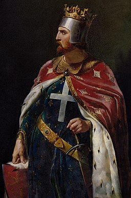

Richard the Lionheart: Crusader
Richard the Lionheart, whose full name was Richard I of England, was a brave and famous king who lived a long time ago in the 12th century. He got his nickname, "the Lionheart," because he was known for being very courageous and skilled in battles.
Richard was born in England in 1157 and became the King of England in 1189. He was part of a royal family called the Plantagenets. One of the most exciting things about Richard was that he went on a big adventure known as the Third Crusade. The Crusades were like long journeys and battles to faraway lands.
During the Third Crusade, Richard showed his bravery and leadership skills. He even fought against a famous opponent, Saladin, who was a powerful leader in the Middle East. Despite facing challenges, Richard made a truce, or an agreement for peace, with Saladin.
Richard the Lionheart spent a lot of time away from England, and during his absence, his younger brother John caused trouble back home. Eventually, Richard returned to England, but he didn't stay there for long. He tragically passed away in 1199.
Even though Richard the Lionheart's reign was relatively short, he is remembered as a hero and a symbol of bravery. Many stories and legends celebrate his courage, making him a fascinating figure from history!
Short Biography: Richard the Lionheart
Once upon a time, in the medieval land of England, there lived a heroic and valiant ruler named Richard the Lionheart. Richard was born on September 8, 1157, in Oxford, England, to King Henry II and Queen Eleanor of Aquitaine.
From a young age, Richard showed a strong spirit and a love for adventure. He was known for his courage and skill in battles, earning him the nickname "Lionheart" because of his fierce bravery on the battlefield.
As Richard grew older, he became a skilled knight, mastering the art of sword fighting and chivalry. In 1189, he became the King of England, inheriting the throne from his father. Despite his royal duties, Richard was drawn to the excitement of quests and crusades.
One of the most famous stories about Richard the Lionheart is his involvement in the Third Crusade. Crusades were grand adventures where knights traveled to faraway lands to protect sacred places. Richard, along with other European leaders, embarked on a journey to the Holy Land to reclaim Jerusalem.
During the Third Crusade, Richard displayed incredible leadership and bravery. He won several battles and earned the respect of both friends and foes. However, despite his success, he faced challenges and was unable to capture Jerusalem. Yet, his efforts in the Holy Land left a lasting legacy, and he eventually made a peace treaty with the Muslim leader Saladin.
Richard the Lionheart's reign was not without challenges in England, including conflicts with his brother John. Eventually, after a long and adventurous life, Richard met his end on April 6, 1199, in France. His heart was buried at Rouen, and the rest of his body at Fontevraud Abbey.
Even though Richard the Lionheart's time as king was relatively short, his legacy as a brave and noble leader lives on. He is remembered as a legendary knight, a skilled warrior, and a king who left his mark on the pages of history.
Timeline
1157 Richard is born in England as the son of King Henry II.
1189 He becomes King of England after his father's death.
Late 1100s Richard goes on the third Crusades to fight for a special city in the Holy Land.
1199 Sadly, he dies from a wound he got in a battle.
Fun Facts:
Richard the Lionheart was born on September 8, 1157, in England.
He got the nickname "Lionheart" because he was super brave and fought like a lion in battles.
Richard loved exploring and having exciting adventures.

Impact on the World:
Richard the Lionheart was a famous king known for his courage:
Knighthood: He was a skilled knight and led his soldiers in battles during the Crusades.
Chivalry: Richard believed in chivalry, which means he thought knights should be honorable and help those in need.
Legend and Stories: His bravery and adventures became the stuff of legends, inspiring stories and songs.
Medieval Times: Richard's time as king is remembered as an exciting and important part of medieval history.
Reference Books for Elementary Students
While there may not be many books specifically tailored for elementary students that focus solely on Richard the Lionheart, you can introduce young readers to historical fiction, biographies, or picture books that touch upon this historical figure and the medieval period. Here's a list of recommended books that are suitable for elementary students:
"You Wouldn't Want to Be in a Medieval Dungeon!" by Fiona MacDonald
This engaging and humorous book provides a broad overview of medieval life, including aspects related to kings and knights.
"Who Was Richard the Lionheart?" by James Buckley Jr.
Part of the "Who Was?" series, this biography introduces young readers to Richard the Lionheart in an accessible and entertaining way.
"Castle Diary: The Journal of Tobias Burgess" by Richard Platt
Although not directly about Richard the Lionheart, this book offers a glimpse into medieval life and castles, providing context for the historical period.
"Good Masters! Sweet Ladies!: Voices from a Medieval Village" by Laura Amy Schlitz
This book is a collection of monologues that offers a vivid and diverse portrayal of characters living in a medieval village.
"The Adventures of Marco Polo" by Russell Freedman
While focused on Marco Polo, this book provides a broader understanding of the medieval world and the adventures people had during that time.
"Knights and Castles: Explore Inside" by Andrew Langley
This interactive book features flaps and cutaways to engage young readers in learning about knights, castles, and medieval life.
Remember to check the reading level and content to ensure that the books align with the age and maturity of the elementary students. Additionally, consider incorporating these books into classroom discussions or activities to enhance the learning experience.